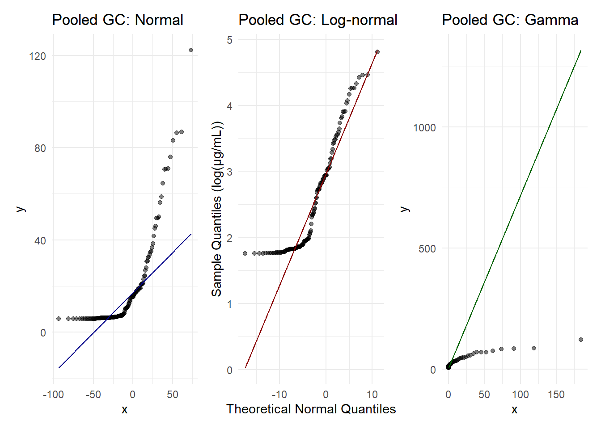
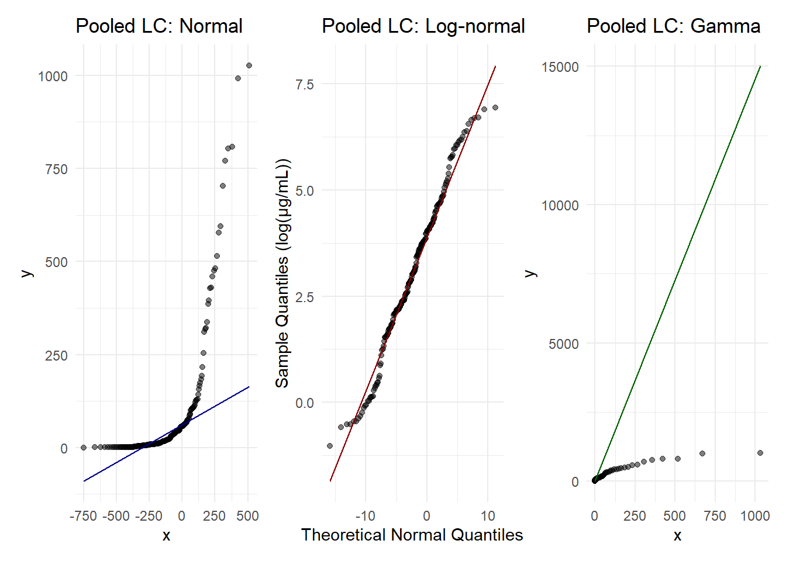

# 1. USPF
uspf_gcms <- c(175, 354, 29, 183, 432, 104, 102, "N.D.", 39, 35, 35, 33, 86, 169, "N.D.", 32, "N.D.", 89, 29, 33, "N.D.", 29.4, "N.D.", "N.D.", "N.D.", "N.D.", "N.D.", "N.D.", "N.D.", "N.D.", "N.D.", "N.D.", 29.2, "N.D.", "N.D.", 76.5, 89.5, "N.D.", 36.1, "N.D.", "N.D.", 133.6, 208.6, "N.D.", 35.9, "N.D.", 31.2, 31.4, 247.3, "N.D.", "N.D.", "N.D.", "N.D.", 30.7, 93.6, 76.2, 29.0, "N.D.", "N.D.", "N.D.", "N.D.", "N.D.", 89.7, "N.D.", "N.D.", "N.D.", 29.2, "N.D.", "N.D.", "N.D.")
uspf_lcms <- c("N.D.", "N.D.", 7.9, 6.6, "N.D.", "N.D.", 3.4, "N.D.", "N.D.", "N.D.", 44.4, "N.D.", "N.D.", "N.D.", "N.D.", 119.7, 3.2, "N.D.", 4.4, "N.D.", 8.0, "N.D.", "N.D.", "N.D.", "N.D.", "N.D.", "N.D.", "N.D.", 1611, "N.D.", "N.D.", "N.D.", "N.D.", "N.D.", "N.D.", "N.D.", 2574, "N.D.", "N.D.", "N.D.", "N.D.", "N.D.", "N.D.", "N.D.", 1686, 288, 27, 613, 711, "N.D.", "N.D.", 133, "N.D.", "N.D.", 509, "N.D.", "N.D.", 184, "N.D.", "N.D.", "N.D.", "N.D.", "N.D.", "N.D.", 236, "N.D.", "N.D.", "N.D.", "N.D.", "N.D.", "N.D.", 292, "N.D.", 293, 44, "N.D.", 104, 50, 4017, "N.D.", "N.D.", "N.D.", "N.D.", "N.D.", 55, 47, 165, "N.D.", "N.D.", "N.D.", "N.D.", "N.D.", "N.D.", "N.D.", 56, "N.D.", "N.D.", 524, "N.D.", "N.D.", "N.D.", "N.D.", "N.D.", 49, "N.D.", "N.D.", "N.D.", "N.D.", 68, "N.D.", "N.D.", 570)
# 2. C-USPF
cuspf_gcms <- c("N.D.", "N.D.", "N.D.", "N.D.", "N.D.", "N.D.", "N.D.", "N.D.", "N.D.", 31, "N.D.", "N.D.", "N.D.", 114, "N.D.", "N.D.", "N.D.", "N.D.", "N.D.", 30, "N.D.", "N.D.", "N.D.", "N.D.", 94.9, "N.D.", "N.D.", 161.9, "N.D.", 29.0, 52.4, "N.D.", "N.D.", "N.D.", "N.D.", "N.D.", "N.D.", 31.5, 40.1, 30.3, "N.D.", 162.9, 281.0, "N.D.", "N.D.", "N.D.", "N.D.", 32.8, "N.D.", "N.D.", "N.D.", "N.D.", "N.D.", 30.6, 83.7, "N.D.", "N.D.", "N.D.", 33.3, "N.D.", "N.D.", "N.D.", "N.D.", 29.1, 51.7, "N.D.", "N.D.", 29.3, "N.D.", 29.5)
cuspf_lcms <- c(5.2, "N.D.", 31.2, 4.7, "N.D.", "N.D.", "N.D.", 5.2, "N.D.", "N.D.", "N.D.", "N.D.", "N.D.", "N.D.", "N.D.", "N.D.", "N.D.", "N.D.", "N.D.", 3.0, "N.D.", "N.D.", 2.8, "N.D.", 42, "N.D.", "N.D.", 58, 3856, "N.D.", "N.D.", "N.D.", "N.D.", "N.D.", 267, 109, 5133, "N.D.", "N.D.", 207, 371, "N.D.", 55, "N.D.", "N.D.", "N.D.", 55, "N.D.", "N.D.", "N.D.", 380, "N.D.", "N.D.", "N.D.", 232, "N.D.", 24, 113, "N.D.", "N.D.", "N.D.", "N.D.", "N.D.", "N.D.", "N.D.", "N.D.", 82, "N.D.", "N.D.", 82, 262, 870, "N.D.", "N.D.", "N.D.", "N.D.", 366, 31, 2885, "N.D.", "N.D.", "N.D.", "N.D.", "N.D.", 39, "N.D.", "N.D.", "N.D.", 40, "N.D.", 122, "N.D.", "N.D.", 190, "N.D.", "N.D.", "N.D.", 529, "N.D.", "N.D.", "N.D.", 47, 32, "N.D.", "N.D.", 23, 503, "N.D.", "N.D.", "N.D.", 156, 285)
# 3. CGF
cgf_gcms <- c(192, 355, "N.D.", "N.D.", 434, 105, 107, 32, 41, 36, "N.D.", "N.D.", "N.D.", 122, "N.D.", "N.D.", 33, "N.D.", "N.D.", 37, 34, "N.D.", 29.4, "N.D.", "N.D.", 57.3, 76.1, "N.D.", 29.3, "N.D.", 51.7, "N.D.", "N.D.", "N.D.", 72.5, "N.D.", "N.D.", "N.D.", "N.D.", "N.D.", 84.9, "N.D.", 293.2, 67.2, "N.D.", "N.D.", "N.D.", "N.D.", 611.3, "N.D.", "N.D.", "N.D.", "N.D.", "N.D.", "N.D.", "N.D.", "N.D.", 61.9, "N.D.", 53.3, 29.8, 67.4, "N.D.", "N.D.", "N.D.", 80.0, 29.1, "N.D.", 54.6, 29.7)
cgf_lcms <- c("N.D.", "N.D.", 15.1, "N.D.", "N.D.", 29.4, "N.D.", "N.D.", "N.D.", "N.D.", "N.D.", "N.D.", 12.0, 7.5, "N.D.", "N.D.", "N.D.", "N.D.", "N.D.", "N.D.", "N.D.", "N.D.", "N.D.", "N.D.", "N.D.", 88, 430, 41, 2148, 28, 65, 312, "N.D.", 281, "N.D.", "N.D.", "N.D.", 222, 24, "N.D.", 201, 1270, 65, "N.D.", "N.D.", 315, 66, "N.D.", "N.D.", 105, 1591, "N.D.", 781, 160, 215, 62, "N.D.", 650, 834, 83, 216, 66, 74, 334, "N.D.", 109, "N.D.", 102, 25, "N.D.", "N.D.", "N.D.", 448, "N.D.", "N.D.", 320, 208, "N.D.", 4961, "N.D.", 51, 45, "N.D.", "N.D.", "N.D.", "N.D.", 107, 84, "N.D.", 299, "N.D.", 225, "N.D.", "N.D.", "N.D.", "N.D.", 32, "N.D.", 89, 968, 323, "N.D.", "N.D.", "N.D.", "N.D.", "N.D.")
# 4 UFC-CGF
ufccgf_gcms <- c(225, 323, "N.D.", "N.D.", 380, 94, 95, "N.D.", "N.D.",
32, 32, 31, 77, 140, 32, "N.D.", "N.D.", 75, "N.D.", 31, "N.D.", "N.D.", "N.D.", "N.D.", "N.D.", "N.D.", "N.D.", "N.D.",
"N.D.", "N.D.", "N.D.", 29.4, "N.D.", "N.D.", "N.D.",
"N.D.", "N.D.", 31.9, 38.6, 30.6, "N.D.", 154.1, 246.8,
"N.D.", "N.D.", "N.D.", 32.6, 32.3, "N.D.", "N.D.",
"N.D.", "N.D.", 56.7, 30.8, "N.D.", "N.D.", "N.D.",
"N.D.", "N.D.", "N.D.", "N.D.", "N.D.", "N.D.", "N.D.",
"N.D.", "N.D.", "N.D.", "N.D.", "N.D.", "N.D.")
ufccgf_lcms <- c(5.7, 5.7, 40.5, 3.9, 8.8, "N.D.", "N.D.", "N.D.", 3.2,
5.8, 53.4, "N.D.", 12.4, "N.D.", 25.3, "N.D.", "N.D.",
"N.D.", "N.D.", "N.D.", 9.3, 18.9, "N.D.", 5.5, "N.D.", "N.D.", "N.D.", "N.D.", 2138, "N.D.", "N.D.",
"N.D.", "N.D.", "N.D.", "N.D.", "N.D.", 2378, "N.D.",
"N.D.", 102, "N.D.", "N.D.", "N.D.", 17, "N.D.", 339,
"N.D.", 1081, "N.D.", "N.D.", 344, "N.D.", 556, "N.D.",
172, "N.D.", "N.D.", 211, "N.D.", "N.D.", "N.D.", "N.D.",
"N.D.", "N.D.", "N.D.", "N.D.", "N.D.", "N.D.", 35,
"N.D.", "N.D.", "N.D.", "N.D.", "N.D.", "N.D.", "N.D.", 190, "N.D.", 4045, "N.D.", "N.D.", "N.D.", "N.D.", 638,
55, "N.D.", "N.D.", "N.D.", 43, "N.D.", "N.D.",
"N.D.", 85, 186, "N.D.", 915, 28, 531, 45, "N.D.",
"N.D.", "N.D.", "N.D.", "N.D.", "N.D.", "N.D.",
2973, "N.D.", "N.D.", "N.D.", "N.D.", 537)
# 5 FC-CGF
fccgf_gcms <- c(153, 250, "N.D.", "N.D.", 353, 84, "N.D.", "N.D.", "N.D.",
31, 32, 31, 81, 122, "N.D.", "N.D.", "N.D.", "N.D.", "N.D.", 31, "N.D.", 50.2, "N.D.", 62.1, "N.D.", "N.D.", "N.D.", 173.7, "N.D.",
29.2, "N.D.", "N.D.", 34.6, "N.D.", "N.D.", "N.D.", 35.2,
45.2, 31.0, "N.D.", 229.9, 415.8, "N.D.", "N.D.", 35.7,
"N.D.", 35.5, "N.D.", 29.1, 30.9, 29.4, "N.D.", 30.6,
94.7, 104.8, "N.D.", "N.D.", 35.2, "N.D.", "N.D.", "N.D.",
"N.D.", "N.D.", "N.D.", "N.D.", "N.D.", "N.D.", "N.D.", 29.6)
fccgf_lcms <- c("N.D.", "N.D.", 17.5, 4.6, "N.D.", 3.6, "N.D.", "N.D.",
"N.D.", 7.0, "N.D.", 3.0, "N.D.", "N.D.", "N.D.", 176.3,
"N.D.", 1.8, "N.D.", "N.D.", 7.4, "N.D.", "N.D.", "N.D.", "N.D.", "N.D.", "N.D.", "N.D.", 2412, "N.D.", "N.D.",
"N.D.", 62, "N.D.", "N.D.", 89, 2298, "N.D.", "N.D.",
153, 95, "N.D.", "N.D.", "N.D.", "N.D.", "N.D.", "N.D.",
1978, "N.D.", "N.D.", "N.D.", "N.D.", 640, "N.D.", 223,
"N.D.", "N.D.", 455, "N.D.", 21, "N.D.", "N.D.", "N.D.",
"N.D.", "N.D.", "N.D.", "N.D.", "N.D.", 44, 23, "N.D.",
"N.D.", "N.D.", "N.D.", 23, "N.D.", 228, "N.D.", 3513, 54, "N.D.", "N.D.", 47, "N.D.", "N.D.",
"N.D.", "N.D.", 44, "N.D.", "N.D.", "N.D.", 116, "N.D.",
279, 157, "N.D.", "N.D.", "N.D.", "N.D.", 1929, "N.D.",
"N.D.", "N.D.", 40, 29, "N.D.", 1550, 76, "N.D.", "N.D.",
"N.D.", 394)
# COMBINE ALL
all_gcms_raw <- c(uspf_gcms, cuspf_gcms, cgf_gcms, ufccgf_gcms, fccgf_gcms)
all_lcms_raw <- c(uspf_lcms, cuspf_lcms, cgf_lcms, ufccgf_lcms, fccgf_lcms)Pooled Concentration Distributions - Nahan et al.
Data from Nahan et al.
LOQ
# Limits of Quantification in µg/mL
loq_gc <- 0.1
loq_lc <- 0.5
# To get value to µg/mL
gc_num <- suppressWarnings(as.numeric(all_gcms_raw) * 0.2)
lc_num <- suppressWarnings(as.numeric(all_lcms_raw) * 0.2)
# Create the Left/Right Interval Matrices required by fitdistcens
gc_cens <- data.frame(
left = ifelse(is.na(gc_num), NA, gc_num),
right = ifelse(is.na(gc_num), loq_gc, gc_num)
)
lc_cens <- data.frame(
left = ifelse(is.na(lc_num), NA, lc_num),
right = ifelse(is.na(lc_num), loq_lc, lc_num)
)
# Print proportions below LOQ
gcms_nd_pct <- sum(is.na(gc_num)) / length(gc_num) * 100
lcms_nd_pct <- sum(is.na(lc_num)) / length(lc_num) * 100
cat(sprintf("Pooled GC/MS N.D. Percentage: %.1f%%\n", gcms_nd_pct))Pooled GC/MS N.D. Percentage: 60.7%cat(sprintf("Pooled LC/MS N.D. Percentage: %.1f%%\n", lcms_nd_pct))Pooled LC/MS N.D. Percentage: 65.2%Fit distributions
# Fit Normal, Log-Normal, and Gamma distributions for GC/MS
fit_gc_norm <- fitdistcens(gc_cens, "norm")
fit_gc_lnorm <- fitdistcens(gc_cens, "lnorm")
fit_gc_gamma <- fitdistcens(gc_cens, "gamma")
# Fit Normal, Log-Normal, and Gamma distributions for LC/MS
fit_lc_norm <- fitdistcens(lc_cens, "norm")
fit_lc_lnorm <- fitdistcens(lc_cens, "lnorm")
fit_lc_gamma <- fitdistcens(lc_cens, "gamma")
# AIC for comparison
c(Normal = summary(fit_gc_norm)$aic,
LogNormal = summary(fit_gc_lnorm)$aic,
Gamma = summary(fit_gc_gamma)$aic) Normal LogNormal Gamma
1574.304 1812.131 1692.356 c(Normal = summary(fit_lc_norm)$aic,
LogNormal = summary(fit_lc_lnorm)$aic,
Gamma = summary(fit_lc_gamma)$aic) Normal LogNormal Gamma
2992.780 2738.027 2668.303 Results log normal distribution
summary(fit_gc_lnorm)Fitting of the distribution ' lnorm ' By maximum likelihood on censored data
Parameters
estimate Std. Error
meanlog -3.192182 0.4087984
sdlog 5.330066 0.3821352
Loglikelihood: -904.0654 AIC: 1812.131 BIC: 1819.841
Correlation matrix:
meanlog sdlog
meanlog 1.0000000 -0.5965317
sdlog -0.5965317 1.0000000summary(fit_lc_lnorm)Fitting of the distribution ' lnorm ' By maximum likelihood on censored data
Parameters
estimate Std. Error
meanlog -2.346351 0.3213298
sdlog 4.844873 0.2901309
Loglikelihood: -1367.014 AIC: 2738.027 BIC: 2746.662
Correlation matrix:
meanlog sdlog
meanlog 1.0000000 -0.6499402
sdlog -0.6499402 1.0000000QQplots
df_gc <- data.frame(conc = na.omit(gc_num))
df_lc <- data.frame(conc = na.omit(lc_num))
# ------------- GC Plots -------------
q_gc_n <- ggplot(df_gc, aes(sample = conc)) +
stat_qq(distribution = qnorm, dparams = list(mean = fit_gc_norm$estimate["mean"], sd = fit_gc_norm$estimate["sd"]), alpha = 0.5) +
stat_qq_line(distribution = qnorm, dparams = list(mean = fit_gc_norm$estimate["mean"], sd = fit_gc_norm$estimate["sd"]), color = "darkblue") +
labs(title = "Pooled GC: Normal") + theme_minimal()
q_gc_ln <- ggplot(df_gc, aes(sample = log(conc))) +
stat_qq(distribution = qnorm,
dparams = list(mean = fit_gc_lnorm$estimate["meanlog"],
sd = fit_gc_lnorm$estimate["sdlog"]),
alpha = 0.5) +
stat_qq_line(distribution = qnorm,
dparams = list(mean = fit_gc_lnorm$estimate["meanlog"],
sd = fit_gc_lnorm$estimate["sdlog"]),
color = "darkred") +
labs(title = "Pooled GC: Log-normal",
x = "Theoretical Normal Quantiles",
y = "Sample Quantiles (log(µg/mL))") +
theme_minimal()
q_gc_g <- ggplot(df_gc, aes(sample = conc)) +
stat_qq(distribution = qgamma, dparams = list(shape = fit_gc_gamma$estimate["shape"], rate = fit_gc_gamma$estimate["rate"]), alpha = 0.5) +
stat_qq_line(distribution = qgamma, dparams = list(shape = fit_gc_gamma$estimate["shape"], rate = fit_gc_gamma$estimate["rate"]), color = "darkgreen") +
labs(title = "Pooled GC: Gamma") + theme_minimal()
# Display GC comparison
q_gc_n + q_gc_ln + q_gc_g
# ------------- LC Plots -------------
q_lc_n <- ggplot(df_lc, aes(sample = conc)) +
stat_qq(distribution = qnorm, dparams = list(mean = fit_lc_norm$estimate["mean"], sd = fit_lc_norm$estimate["sd"]), alpha = 0.5) +
stat_qq_line(distribution = qnorm, dparams = list(mean = fit_lc_norm$estimate["mean"], sd = fit_lc_norm$estimate["sd"]), color = "darkblue") +
labs(title = "Pooled LC: Normal") + theme_minimal()
q_lc_ln <- ggplot(df_lc, aes(sample = log(conc))) +
stat_qq(distribution = qnorm,
dparams = list(mean = fit_lc_lnorm$estimate["meanlog"],
sd = fit_lc_lnorm$estimate["sdlog"]),
alpha = 0.5) +
stat_qq_line(distribution = qnorm,
dparams = list(mean = fit_lc_lnorm$estimate["meanlog"],
sd = fit_lc_lnorm$estimate["sdlog"]),
color = "darkred") +
labs(title = "Pooled LC: Log-normal",
x = "Theoretical Normal Quantiles",
y = "Sample Quantiles (log(µg/mL))") +
theme_minimal()
q_lc_g <- ggplot(df_lc, aes(sample = conc)) +
stat_qq(distribution = qgamma, dparams = list(shape = fit_lc_gamma$estimate["shape"], rate = fit_lc_gamma$estimate["rate"]), alpha = 0.5) +
stat_qq_line(distribution = qgamma, dparams = list(shape = fit_lc_gamma$estimate["shape"], rate = fit_lc_gamma$estimate["rate"]), color = "darkgreen") +
labs(title = "Pooled LC: Gamma") + theme_minimal()
# Display LC comparison
q_lc_n + q_lc_ln + q_lc_g